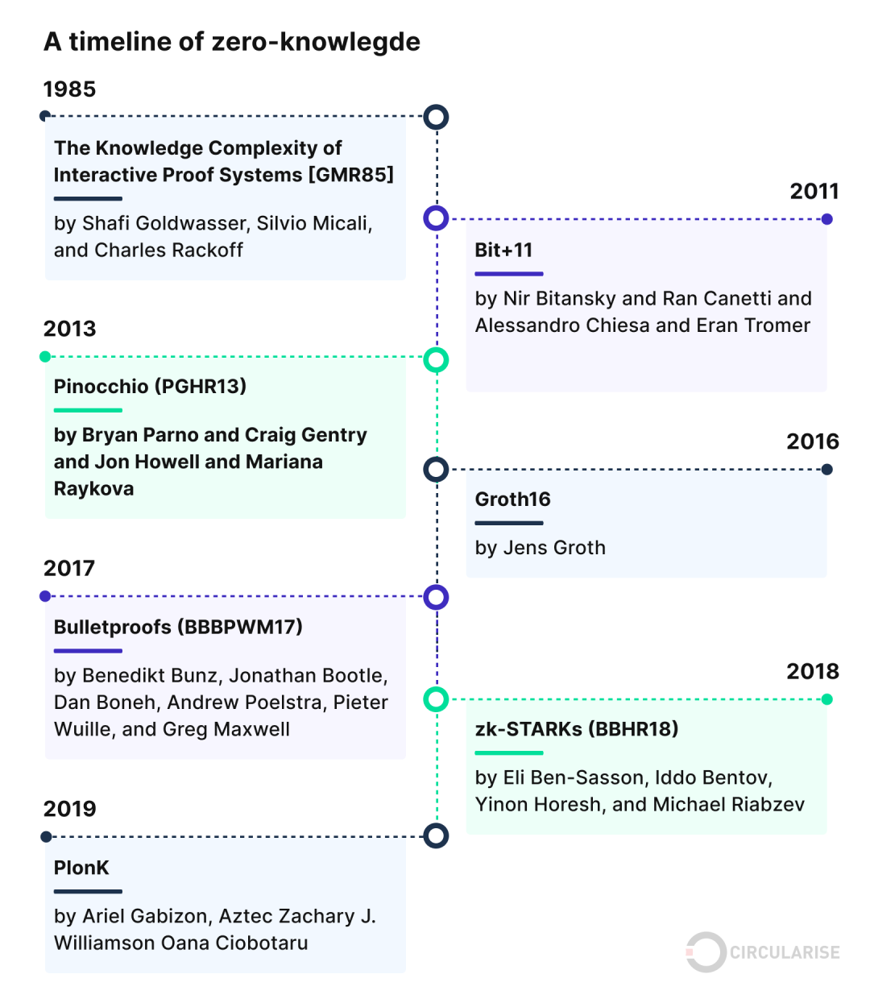
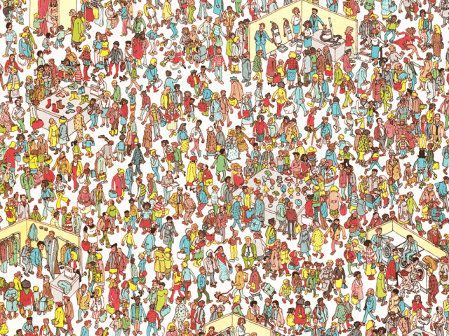

浅学习一下零知识证明
之前一直听说零知识证明，但是一直没有学习过相关内容
今天在阅读陈教授的《Identity-based chameleon hashing and signatures without key exposure》一文中遇到了，故学习记录一下
知识证明和零知识证明
知识证明是Proofs of Knowledge，零知识证明是Zero-Knowlegde Proof
二者之间有很多相似点，也有区别，具体如下
信息泄露的程度
知识证明中，通常证明着不会直接泄露密码，但是可能会提供一些有用的中间信息（例如密文的哈希值）
零知识证明中，验证者在验证的过程中，不能获得任何相关的信息，除了“证明者知道这个秘密”
应用场景
知识证明更侧重确认某人知道某个密码
零知识证明不仅确认某人知道某个密码，还确保验证过程中完全不会泄露任何相关信息
知识证明
定义：证明者向验证者展示他们知道某个秘密值，但不一定完全隐藏这个秘密；关键在于，验证者能够确信证明者确实知道这个秘密值
离散对数知识证明
Proof of Knowledge of a Discrete Logarithm
证明者拥有一个秘密值 $x$，满足 $x = \log_g y$，即 $y = g^x$（离散对数问题）
证明者想要向验证者证明他确实知道这个 $x$，但不能直接透露 $x$
过程：
证明者选择一个随机数 $r \in_R \mathbb{Z}_q$（即从 $\mathbb{Z}_q$ 中随机选取一个数，其中 $_R$ 表示均匀随机）
计算 $c = H(g, y, g^r)$，这里的 $H$ 是一个抗碰撞的哈希函数，它将输入映射到一个固定长度的输出值
计算 $s = r - c \cdot x \mod q$，这一步结合了秘密值 $x$ 和随机值 $r$
验证者接收到 $(c, s)$ 之后，检查 $c = H(g, y, g^s \cdot y^c)$ 是否成立
如果这个等式成立，那么验证者可以确信证明者知道离散对数 $x$，但验证者无法直接获得 $x$
这实际上是基于 Schnorr 签名的思想——证明者通过使用随机数 $r$ 混淆了秘密 $x$，确保即使提供了 $(c, s)$，也不能反推出 $x$，但同时可以证明其拥有 $x$ 的知识
两个离散对数相等的知识证明
Proof of Knowledge for the Equality of Two Discrete Logarithms
证明者拥有一个秘密 $x$，同时满足 $x = \log_g u = \log_h v$，即证明者想要证明 $u = g^x$ 且 $v = h^x$，这意味着在不同的基 $g$ 和 $h$ 下，它们的离散对数相同
过程：
- 证明者选择一个随机数 $r \in_R \mathbb{Z}_q$
- 计算 $c = H(g, h, u, v, g^r, h^r)$ （ $g$ 和 $h$ 指的是两个基，它们对应的值是 $u$ 和 $v$）
- 计算 $s = r - c \cdot x \mod q$
- 验证者接收到 $(c, s)$ 后，检查 $c = H(g, h, u, v, g^s \cdot u^c, h^s \cdot v^c)$ 是否成立
如果这个等式成立，验证者就知道证明者确实拥有能够满足这两个离散对数相等的秘密 $x$
基于身份的两个离散对数相等的知识证明
Identity-Based Proof of Knowledge for Equality of Two Discrete Logarithms
基于双线性对的扩展，证明者想证明 $\log_g u = \log_h v$
其中 $g, h, u, v$ 是通过双线性映射生成的，具体的值如下：
其中 $P$ 和 $Q$ 是群 $G_1$ 中的元素，$SID$ 是证明者的私钥
过程：
- 证明者选择一个随机数 $r \in_R \mathbb{Z}_q$
- 计算 $c = H(g, h, u, v, g^r, h^r)$
然后计算 $S = rP - c \cdot SID$，这里 $S$ 是一个基于群 $G_1$ 元素的值
验证者接收到 $(c, S)$ 后，检查 $c = H(g, h, u, v, e(P, S) \cdot u^c, e(Q, S) \cdot v^c)$ 是否成立
如果等式成立，验证者就能相信证明者拥有相同的离散对数 $x$，但又不会获得 $x$ 的具体值
零知识证明
定义：不泄露任何关于秘密本身的信息就能证明某个声明为真，即验证者不能从证明过程中获得任何除了“声明为真”的附加信息
零知识证明必须满足三个特性：
- 完备性（Completeness）：若证明者知道秘密，则城市的验证者一定能够通过验证
- 可靠性（Soundness）：若证明者不知道秘密，则无法欺骗验证者通过验证
- 零知识性（Zero-Knowledge）：除了知道证明者确实拥有该秘密，验证者不能通过验证过程获得任何有关秘密的附加信息
Schnoor协议
假设有一个循环群 $G$ ，其生成元为 $g$，其阶为一个大素数 $q$，则 Schnorr 协议证明某人知道一个离散对数秘密 $x$，即 $y = g^x \mod p$，其中 $p$ 是大素数模数
- 公共参数：
公开循环群 $G$，生成元 $g$，以及验证者要证明的 $y = g^x$。
证明者持有秘密 $x$。 - 承诺阶段（Commitment）：
证明者随机选择一个值 $r$，计算承诺值 $t = g^r \mod p$，然后将 $t$ 发给验证者。 - 质询阶段（Challenge）：
验证者随机生成一个质询 $e$，其范围通常是 $0 \leq e < q$，并发送给证明者。 - 响应阶段（Response）：
证明者计算响应 $s = r + e \cdot x \mod q$，然后将 $s$ 发给验证者。 - 验证阶段（Verification）：
验证者通过 $g^s\overset{\text{?}}{=}t\cdot y^e\mod p$ 检查证明
零知识证明的性质在Schnorr协议中的体现
完备性：如果证明者正确地知道 $x$，那么 $g^s = g^{r + e \cdot x} = g^r \cdot (g^x)^e = t \cdot y^e$，验证者将接受证明。
可靠性：如果证明者不正确地知道 $x$，则无论如何计算 $s$，该等式都不会以高概率成立。因此，证明者无法欺骗验证者。
零知识性：验证者在整个过程中，只看到承诺 $t$、质询 $e$、响应 $s$，但由于质询 $e$ 是随机生成的，且验证者无法反推出 $r$ 或 $x$，因此验证者无法从中得到任何有用的信息。验证者只能知道证明者确实知道 $x$。
发展历程

三个实例
《瓦利在哪里？》

遮住整个图像，通过一个切口来展示瓦利的图像，而不公布具体坐标
成员证明
你遇到一个不认识的人，但她声称也是你所在团队的成员。你如何知道是否可以信任她？
你的团队有一个带锁的保险箱，只有你的团队成员知道秘密组合密码，可以打开保险箱
- 验证者写一条秘密信息并放入锁定的保险箱中
- 符合要求的证明者知道密钥，打开锁定的保险箱
- 证明者将秘密信息交还给验证者
- 验证者确信证明者真的知道密钥，因此信任
不透明定价
两个人在同一供应商购买相同的物品，但是不知道价格是否相同
- 有4个带锁的锁盒，每个盒子上有一个只能放一张纸的小插槽。它们分别标有价格100、200、300和400，并放置在一个安全的私人房间中
- A首先独自进入房间。A的单价是200，A拿走标有200的锁盒的钥匙，并销毁其他盒子的钥匙。离开房间
- B独自进入房间，带有4张纸，其中1张上面有对钩，另外3张上面都有叉号。B的单价是300，故将带有对钩的纸张放入标有300的锁盒中，并将带有叉号的纸张放入其他锁盒中。离开房间
- A可以带着只能打开标有200的锁盒的钥匙返回，发现一张上面有叉号的纸，现在A知道二人价格不同
- B对手回来后，看到A手上有一张上面有叉号的纸，所以现在B也知道二人价格不同
其他看起来比较新的东西？
交互式零知识证明
在交互式零知识证明中，证明者和验证者进行来回对话。这种交互对于验证者确信声明的有效性至关重要。虽然有效，但交互性在某些情况下可能会受到限制。
优点：安全级别高，非常适合实时应用
缺点：需要多轮交互，对于异步系统来说并不理想。
非交互式零知识证明
顾名思义，非交互式零知识证明消除了证明者和验证者之间对话的需要。来自证明者的一条消息足以让验证者信服。
优点：高效且可扩展，非常适合区块链和其他去中心化系统
缺点：与交互式零知识证明相比，安全性稍差
zk-SNARKs
zk-SNARK（零知识简洁非交互式知识论证）结合了两个世界的优点。它们是非交互式的，但提供了高水平的安全性，使它们在包括区块链技术在内的各种应用中很受欢迎。
优点：高度安全、高效、无需交互
缺点：设置复杂且计算要求较高
zk-STARKs：透明的后量子安全证明
zk-STARK 提供了 zk-SNARK 所不具备的透明度。它们不需要可信的设置，这使得它们更加透明，并且可能更安全地抵御量子攻击。
优点：无需可信设置、抗量子、高度可扩展。
缺点：证明尺寸更大，计算开销更大。
后面还有这一篇没看，不知道他在做什么但是字数好多（
留个戳，以后大概率不会看了（
1 | reference： |
.gif)
.gif)
.gif)
.gif)
.gif)
.gif)
.gif)
.gif)
.gif)
.gif)
.gif)